The story of these games
🎮 The Witcher 3: Wild Hunt
🧭 القصة:
تدور القصة حول “جيرالت من ريفيا”، صائد الوحوش المحترف، الذي ينطلق في رحلة للعثور على ابنته بالتبني “سيري”.
تتمتع “سيري” بقدرات خارقة، وتبحث عنها قوى شريرة تدعى “الصيد البري”، وهي فرسان يسعون للسيطرة على قوتها.
تقييم اللاعبين: ⭐ 9.1/10. اللعبة حققت نجاحًا كبيرًا بفضل عالمها المفتوح وقصتها المليئة بالتشويق.
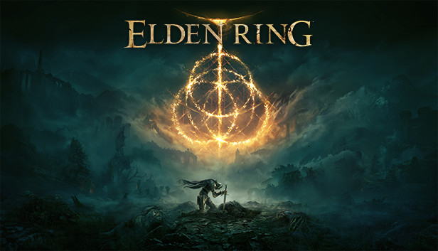
🎮 Elden Ring
🧭 القصة:
في لعبة "Elden Ring"، يلعب اللاعب دور شخصية تُسمى "في عالم مغطى بالظلام والفوضى.
مهمتك هي العثور على "Elden Ring" المكسور لاستعادة النظام في عالم مليء بالمخاطر والوحوش والآلهة القوية.
تقييم اللاعبين: ⭐ 9.5/10. حققت اللعبة إعجابًا كبيرًا بفضل عالمها المفتوح، وتصميم المعارك المذهل، والقصة الغامضة.
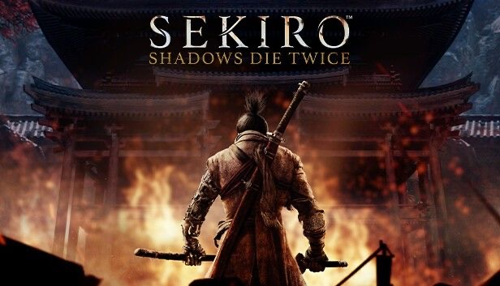
🎮 Sekiro: Shadows Die Twice
🧭 القصة:
في أواخر حقبة السينغوكو في اليابان، يتقمص اللاعب دور “الذئب”،
شينوبي فقد ذراعه اليسرى أثناء محاولته حماية سيده الشاب “كورو”،
الوريث لدماء التنين التي تمنح الخلود. بعد إنقاذه من قبل نحات غامض،
يُزوَّد بذراع صناعية متعددة الاستخدامات، ويبدأ رحلة محفوفة بالمخاطر
لاستعادة كورو ومواجهة عشيرة “آشينا” التي تسعى لاستغلال قوى سيده.

🎮 Ghost of Tsushima
🧭 القصة:
تقع أحداث القصة في جزيرة تسوشيما خلال الغزو المغولي لليابان في القرن الثالث عشر.
يتبع اللاعب شخصية "جين ساكاي"، ساموراي يسعى لحماية أرضه وشعبه بأي وسيلة ممكنة.
يتخلى جين عن بعض تقاليد الساموراي ويبدأ باستخدام أساليب التخفي والاغتيال ليهزم الغزاة.
القصة تتمحور حول الشرف، الواجب، والتضحية، وقد حصدت تقييم لاعبين: 9.2 / 10.
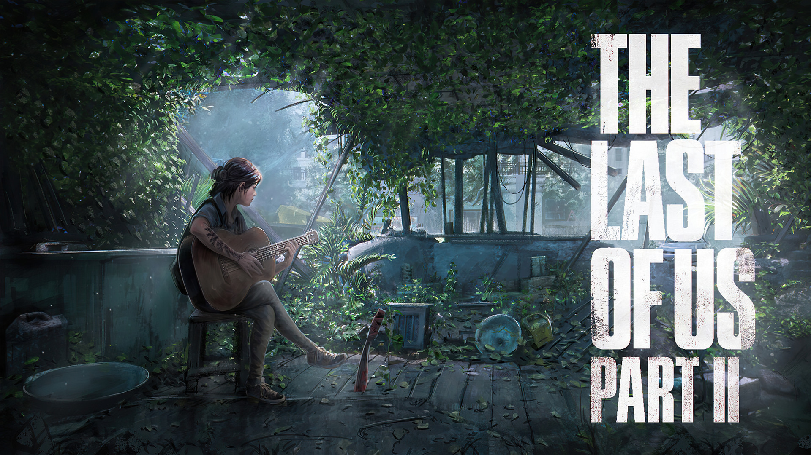
🎮 The Last of Us Part II
🧭 القصة:
بعد سنوات من الأحداث، تتبع القصة إيلي في عالم مدمر نتيجة لوباء قاتل، وتبدأ رحلتها بعد مأساة شخصية.
الرحلة تأخذها إلى صراعات داخلية وتحالفات غير متوقعة في عالم عنيف ومضطرب.
تسعى للحفاظ على إنسانيتها وسط كل الفوضى، واتخاذ قرارات مصيرية بين الحياة والموت.
تدور حول الفقدان، الانتقام، التسامح، الصداقة. تجربة عاطفية قوية بتقييم 9.3 / 10.
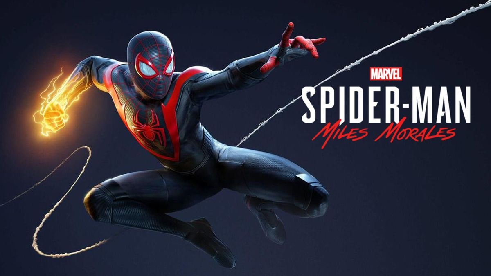
️🎮 Spider-Man 2: Miles Morales
🧭 القصة:
تدور القصة حول "مايلز موراليس" الشاب الذي يكتشف قواه الخارقة بعد وفاة سبايدرمان الأصلي.
يواجه مايلز تهديدات جديدة في مدينة نيويورك خلال فترة الشتاء القارس وسط صراع بين شركة طاقة خطيرة وجماعة متمردة.
مع تطور الأحداث، يجب على مايلز أن يثبت أنه يستحق لقب سبايدرمان ويوازن بين حياته الشخصية ومسؤولياته الجديدة.
تقدم اللعبة تجربة مليئة بالإثارة والمشاعر مع أسلوب قتال سريع ورسومات مذهلة وتقييم ممتاز 9.2 / 10.
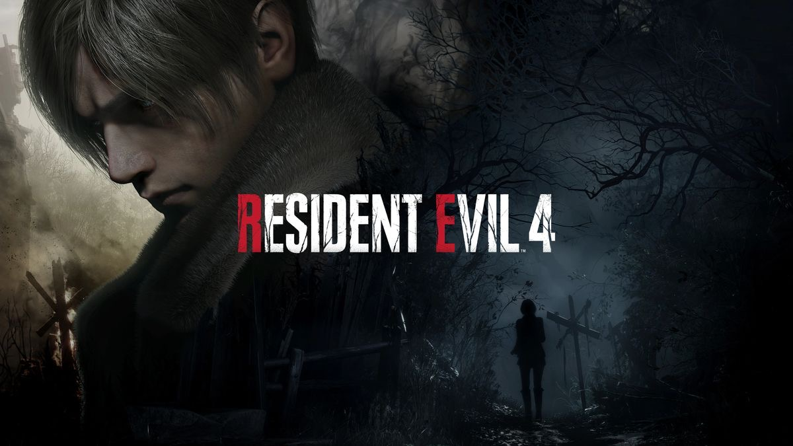
🎮 Resident Evil 4
🧭 القصة:
تدور أحداث اللعبة حول "ليون كينيدي"، عميل أمريكي يُرسل في مهمة لإنقاذ ابنة الرئيس التي اختُطفت.
يجد ليون نفسه في قرية نائية بإسبانيا مليئة بسكان تحولوا إلى مخلوقات مرعبة بفعل طفيلي غامض يُعرف بـ"لاس بلاجاس".
خلال رحلته، يواجه ليون تهديدات متعددة من زعماء طوائف خطيرة ومخلوقات متحولة.
تُقدم اللعبة تجربة أكشن ورعب متكاملة برسومات محسّنة وأسلوب لعب مطوّر وتقييم ممتاز 9.5 / 10.
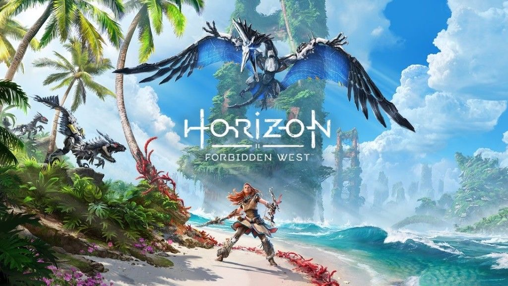
🎮 Horizon Forbidden West
🧭 القصة:
تتابع القصة بطلتنا "ألوي" في رحلة جديدة إلى الغرب المحظور لإنقاذ البشرية من كارثة بيئية تهدد العالم.
تواجه ألوي أراضي مجهولة مليئة بالآلات المتطورة وقبائل جديدة تمتلك تقنيات خطيرة.
تسعى ألوي لاكتشاف أسرار الماضي ومصدر الوباء المنتشر، بينما تصارع تحديات الطبيعة والآلات العملاقة.
تقدم اللعبة تجربة بصرية خلابة وأسلوب لعب متنوع وتقييم ممتاز 9.3 / 10.
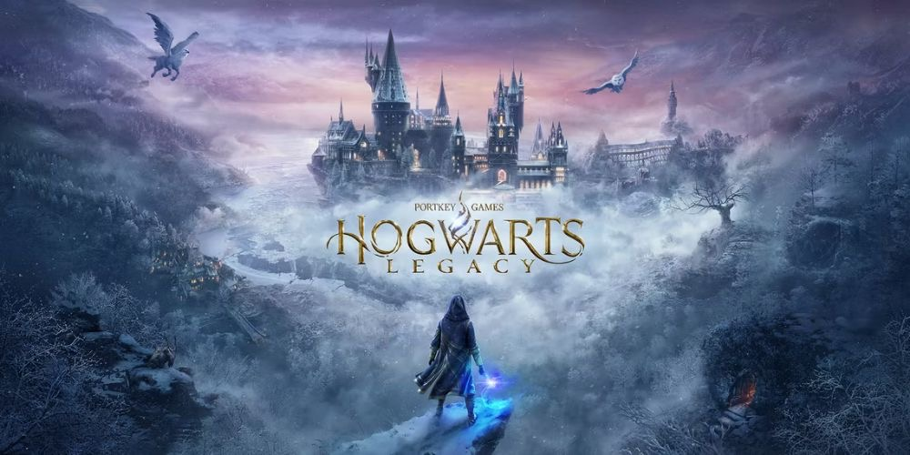
🎮 Hogwarts Legacy
🧭 القصة:
تدور أحداث اللعبة في أواخر القرن التاسع عشر، حيث تلعب بشخصية طالب/طالبة جديد/ة في مدرسة هوجوورتس للسحر.
تكتشف أنك تملك قدرة نادرة على التحكم بسحر قديم وغامض، مما يجذب أنظار قوى مظلمة تهدد عالم السحرة.
بينما تتعلم التعاويذ وتحضر الجرع وتستكشف العالم، تواجه تمرد العفاريت بقيادة "رانروك" وتحالف من السحرة الأشرار.
تقدم اللعبة تجربة سحرية غامرة، عالم مفتوح مليء بالأسرار، وتقييم ممتاز 8.7 / 10.
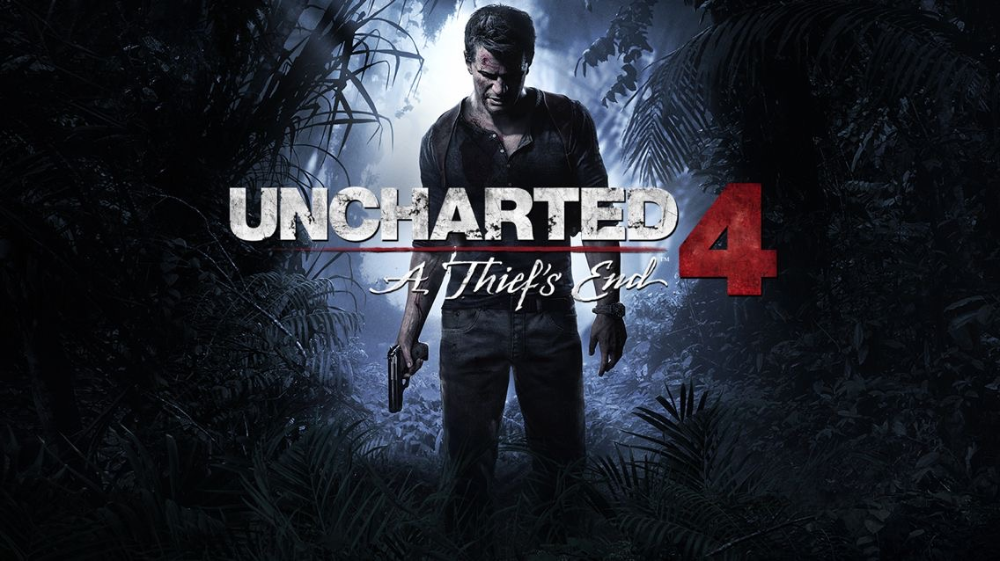
🎮 Uncharted 4: A Thief's End
🧭 القصة:
ناثان دريك يعود من التقاعد عندما يظهر شقيقه "سام" ويطلب مساعدته في العثور على كنز القراصنة المفقود.
تنقلك القصة إلى أماكن مذهلة حول العالم، مليئة بالألغاز والمعارك والتسلق والمغامرات الخطيرة.
اللعبة تقدم تجربة سينمائية مذهلة، بأسلوب لعب متقن ورسوم واقعية ومؤثرات بصرية ممتازة.
تقييم اللعبة 9.3 / 10 وتعد من أفضل ألعاب الأكشن والمغامرة على الإطلاق.
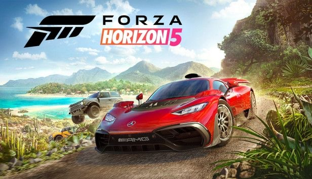
🎮 Forza Horizon 5
🧭 الوصف:
انطلق في عالم مفتوح ضخم مستوحى من المكسيك، مع تنوع بيئي مذهل من الصحارى إلى الغابات والجبال.
تقدم اللعبة تجربة سباق حر بأسلوب أركيدي ممتع، مع مئات السيارات المعدلة ورسومات واقعية جداً.
تحتوي على فعاليات متنوعة مثل السباقات، التحديات، القفزات، والاستكشاف الحر.
تقييمها 9 / 10 وتعتبر من أفضل ألعاب السباق في الجيل الجديد.
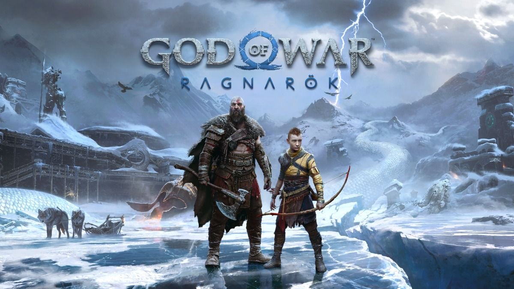
🎮 God of War: Ragnarök
🧭 القصة:
تستكمل اللعبة أحداث الجزء السابق، حيث يواجه كريتوس وابنه أتريوس نهاية العالم في الميثولوجيا النوردية: "راغنروك".
يتعامل كريتوس مع تحديات جديدة، ويخوض صراعاً ضد آلهة مثل ثور وأودين، بينما يسعى أتريوس لاكتشاف هويته.
تقدم اللعبة مزيجاً رائعاً من القتال العنيف، القصة العميقة، والاستكشاف في عالم نورد متنوع.
تقييم اللعبة 9.6 / 10 وتعتبر من أقوى ألعاب الأكشن والمغامرات على الإطلاق.
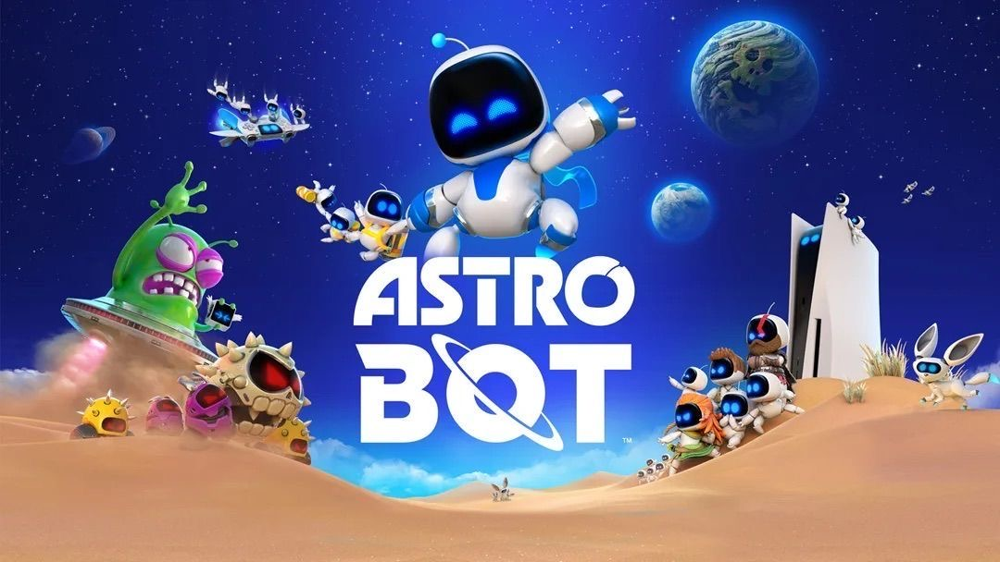
🎮 AstroBot
🧭 القصة:
في AstroBot، تأخذ دور روبوت صغير لطيف يُدعى "آسترو"، يقود فريقاً من الروبوتات في مهمة إنقاذ داخل الفضاء.
بعد أن يتعرض مركبهم لحادث، يتفرق طاقم الروبوتات في كواكب مختلفة، ولك مهمة العثور عليهم واستعادتهم وسط مغامرات مليئة بالتحديات.
كل كوكب يتميز ببيئة فريدة وتصميم ثلاثي الأبعاد مذهل، يتطلب مهارات في القفز، التفاعل، وحل الألغاز، مع دعم لعناصر الواقع الافتراضي (VR) أو DualSense.
اللعبة مشهورة بأسلوبها الإبداعي، تحكمها السلس، ورسوماتها الجميلة التي تناسب جميع الأعمار.
⭐ تقييم اللعبة: 9 / 10 – تجربة ممتعة جداً لعشاق المنصات والمغامرات الخفيفة.

🎮 Bloodborne
🧭 القصة:
تدور أحداث اللعبة في مدينة "يارنام" الملعونة، حيث ينتشر وباء غامض يحول السكان إلى وحوش.
أنت تلعب كـ "الصياد" الذي يسعى للكشف عن أسرار المدينة ومواجهة كائنات مرعبة وجنود قدماء تنتمي لعوالم أخرى.
القصة مظلمة، مليئة بالرمزية والتفاصيل الخفية التي تكتشفها تدريجياً من خلال الاستكشاف والقتال.
اللعبة تقدم نظام قتال سريع وعنيف، مع تصميم مراحل مترابط وعوالم عميقة.
تقييم اللعبة 9.5 / 10 لتجربتها الفريدة، وأجوائها المرعبة، وأسلوب اللعب التحدي.
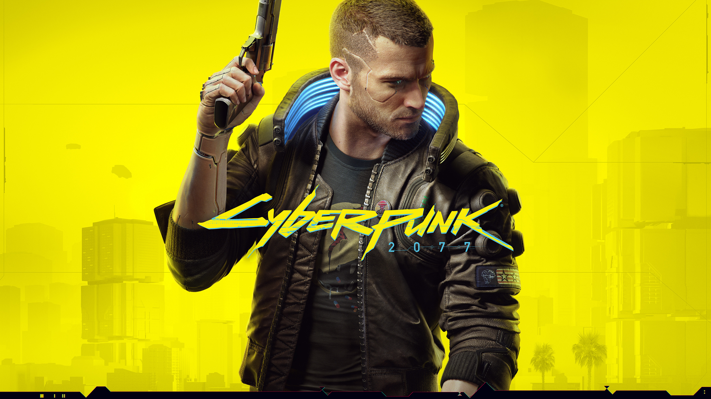
🎮 Cyberpunk 2077
🧭 القصة:
تدور أحداث اللعبة في مدينة مستقبلية تُدعى "Night City"، حيث يتحكم المال والتكنولوجيا في كل شيء.
تلعب بشخصية "V"، مرتزق يسعى للعثور على شريحة إلكترونية تمنح الخلود، ويتورط في صراع بين الشركات الكبرى والعصابات.
خلال رحلتك، تواجه اختيارات مصيرية تؤثر على القصة، وتدخل في مواجهات عنيفة واستكشافات واسعة لعالم مفتوح غني بالتفاصيل.
اللعبة تقدم نظام تخصيص متطور، ومهارات متنوعة، ونهاية تعتمد على قراراتك.
تقييم اللعبة 8.8 / 10 بعد تحديثاتها الأخيرة، بفضل القصة العميقة والتحسينات الكبيرة في الأداء.

🎮 Mortal Kombat 11
🧭 القصة:
في الجزء الحادي عشر من سلسلة مورتال كومبات، يظهر تهديد جديد يُدعى "كرونيكا"، وهي تتحكم بالزمن وتهدف لإعادة تشكيل التاريخ لصالحها.
يجتمع الأبطال مثل "سوب زيرو" و"سكوربيون" و"رايدن" لمواجهة الأعداء القدامى والجدد في معارك دموية لحماية مستقبل العوالم.
القصة تمزج بين الماضي والحاضر، حيث تتقابل الشخصيات بنسخها القديمة، ما يضيف صراعات جديدة ومشوقة.
تقدم اللعبة نظام قتال محسّن، حركات "Fatalities" مذهلة، ونمط قصة سينمائي مذهل.
تقييم اللعبة 9.1 / 10، وتعتبر من أقوى ألعاب القتال بفضل أسلوبها العنيف ورسوماتها القوية.
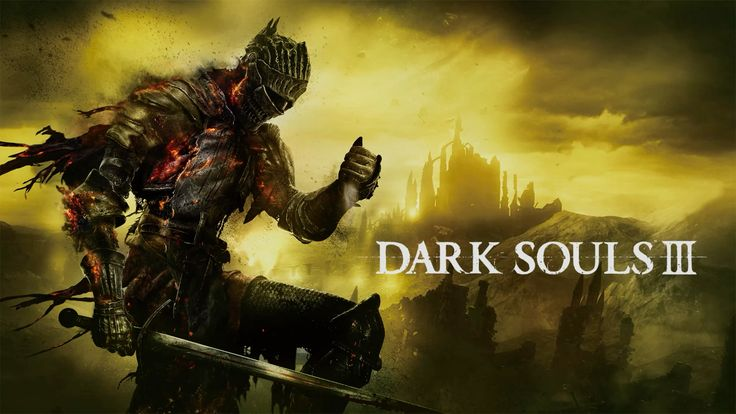
🎮 Dark Souls III
🧭 القصة:
تدور أحداث اللعبة في مملكة "Lothric" التي بدأت تنهار بسبب نهاية عصر النار، حيث تعود الأرواح القديمة للحياة في محاولة لإبقاء النار مشتعلة.
يلعب اللاعب دور "Unkindled" – محارب عاد من الموت – ليهزم "Lords of Cinder" ويعيد التوازن إلى العالم.
القصة تتسم بالغموض والرمزية، وتشجع اللاعب على الاستكشاف لفهم تفاصيل العالم من خلال الحوارات والبيئات.
تقدم اللعبة تحدياً صعباً، نظام قتال دقيق، وزعماء ملحميين يتطلبون استراتيجيات خاصة.
تقييم اللعبة 9.3 / 10، وتُعتبر من أقوى ألعاب الـRPG ذات الطابع المظلم والعمق في التصميم.
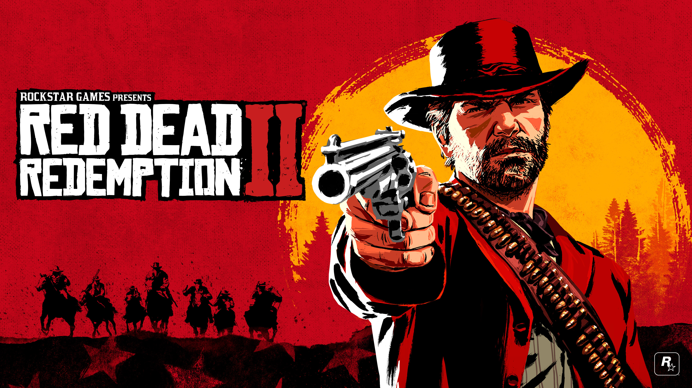
🎮 Red Dead Redemption 2
🧭 القصة:
تدور القصة في الغرب الأمريكي خلال أواخر القرن التاسع عشر.
يتحكم اللاعب بـ "آرتور مورغان"، عضو في عصابة فان دير ليند، الذي يواجه تحولات في عالمه وأخلاقه.
القصة مليئة بالمغامرات، الصراعات الداخلية، والتحديات التي تجسد نهاية عصر الغرب المتوحش.
تقييمات اللاعبين: 9.7 / 10. من أفضل الألعاب القصصية في التاريخ.